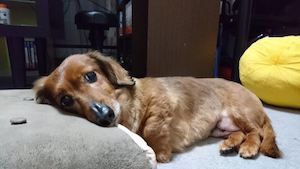

チャミーの性格
好戦的
基本家で寝ているため、知らない人が家に入ってくるととても吠えます！宅急便の配達員の方には毎回申し訳なくなってくるくらいです！
人懐っこい
初対面の人に対してはとても吠えますが、10秒もすれば懐いてしまいます。初めは怖いかもですが噛まないので撫でてあげてください。

寂しがり
家に誰も居なくなるとゴミ箱をひっくり返したりダンボールをかじったりと暴れます。とても寂しがり屋なのでストレスを感じているのでしょう。
基本家で寝ているため、知らない人が家に入ってくるととても吠えます！宅急便の配達員の方には毎回申し訳なくなってくるくらいです！
初対面の人に対してはとても吠えますが、10秒もすれば懐いてしまいます。初めは怖いかもですが噛まないので撫でてあげてください。
家に誰も居なくなるとゴミ箱をひっくり返したりダンボールをかじったりと暴れます。とても寂しがり屋なのでストレスを感じているのでしょう。